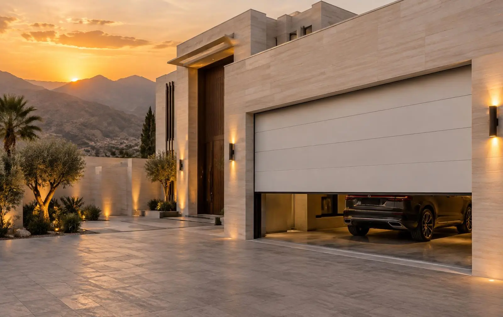
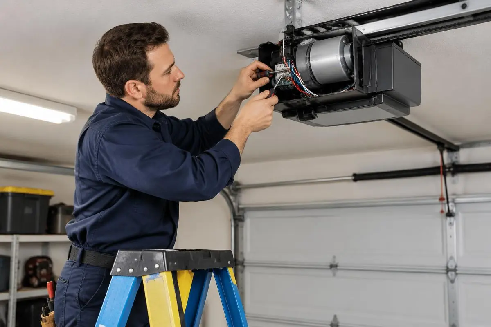

الباب لا يستجيب للريموت
نفحص بطارية الريموت والمستقبل ولوحة التحكم ونعيد البرمجة أو نصلح الكرت.
فني أبواب كراج يصلك لتشخيص الأعطال وإصلاح المحرك والزنبركات والبكرات والحساسات، لتعود بوابة كراجك للعمل بهدوء وأمان.

باب الكراج من أكثر الأبواب استخداماً في المنزل، ومع الوقت تظهر عليه علامات مثل البطء أو الصوت العالي أو التوقف في منتصف الحركة. نقدم صيانة أبواب الكراج في خميس مشيط وأبها لجميع الأنواع الشائعة: الأبواب المقطعية (السكشنال)، والأبواب القلابة، وأبواب الرول المستخدمة في الكراجات.
يبدأ عملنا بفحص شامل لموتور باب الكراج ولوحة التحكم ومسار الباب والزنبركات والكابلات، ثم نشرح لك ما وجدناه ونقترح الحل الذي يناسب حالة الباب.

تصليح أبواب الكراج في خميس مشيط وأبها يبدأ بتحديد سبب العطل بدقة، لا بتغيير القطع عشوائياً.
نفحص بطارية الريموت والمستقبل ولوحة التحكم ونعيد البرمجة أو نصلح الكرت.
نعالج تآكل الترس أو الجنزير وجفاف البكرات وارتخاء المسامير.
نعيد ضبط المجاري والبكرات والكابلات حتى يتحرك الباب بشكل متوازن.
نضبط حساسات الفوتوسل وحدود الحركة وقوة الدفع في لوحة التحكم.
نستبدل الزنبركات والكابلات بقطع مناسبة لوزن الباب بأمان.
نشخص الكرت ونصلحه أو نستبدله بكرت أصلي متوافق.
لا تنتظر حتى يتوقف الباب تماماً. هذه علامات تستدعي الفحص:
تنبيه: زنبركات باب الكراج مشدودة بقوة عالية، فلا تحاول فكها أو ضبطها بنفسك، واترك ذلك لفني مختص. ولمعرفة المزيد عن إصلاح المحركات راجع صفحة إصلاح الدينمو والمحركات وقطع الغيار.

نقدم صيانة أبواب الكراج في خميس مشيط في أحياء مثل الراقي والموسى والرصراص والنسيم والشفاء والعزيزية، ونقدم تصليح أبواب الكراج في أبها في أحياء مثل المنسك والموظفين والمروج والخالدية والسد والنميص.
اطلع على القائمة الكاملة لأحياء خميس مشيط وأبها التي نخدمها.
غالباً يكون السبب جفاف البكرات والمفصلات أو تآكل البكرات أو ارتخاء الزنبركات أو اهتراء ترس المحرك. التشحيم والضبط يحلان كثيراً من الحالات، وفي حال التآكل نستبدل القطعة.
هذا يحدث عادة بسبب حساسات الأمان (الفوتوسل) غير المتقابلة أو المتسخة، أو ضبط خاطئ لحدود الفتح والإغلاق وقوة الدفع في لوحة التحكم. نضبط الحساسات والحدود حتى يعمل الباب بشكل صحيح.
معظم أبواب الكراج مزودة بحبل أو مقبض فك يدوي يفصل الباب عن المحرك. نوضح لكم طريقة استخدامه بأمان أثناء الزيارة.
يُنصح بالصيانة الوقائية بشكل دوري حسب كثافة الاستخدام، وتشمل التشحيم وفحص الزنبركات والكابلات وضبط المحرك والحساسات.
نعم، نقدم صيانة أبواب الكراج وتصليحها في خميس مشيط وأبها وأحيائهما.
تصفح بقية خدمات أبواب الممتاز في خميس مشيط وأبها.
اتصل بفني أبواب كراج في خميس مشيط وأبها الآن.